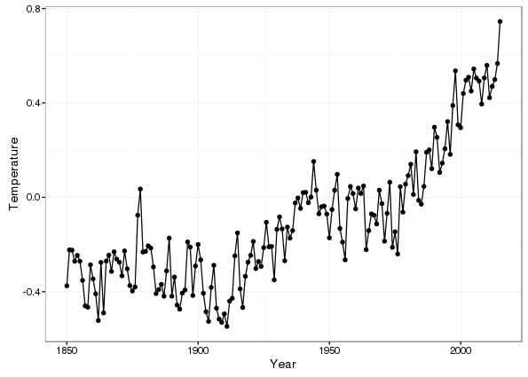
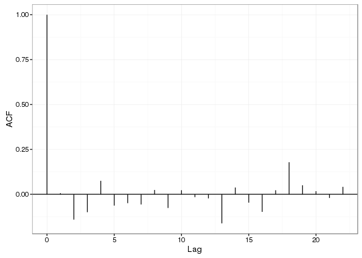
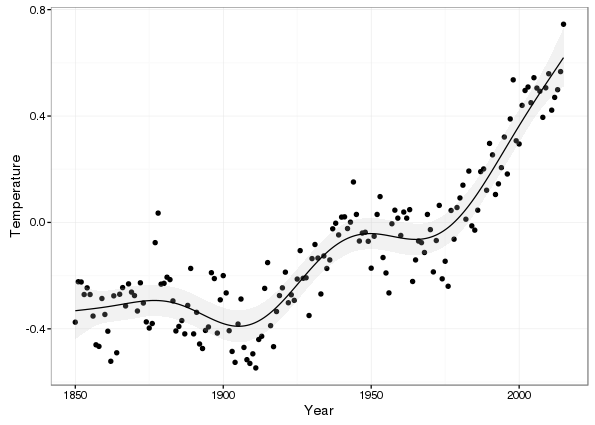
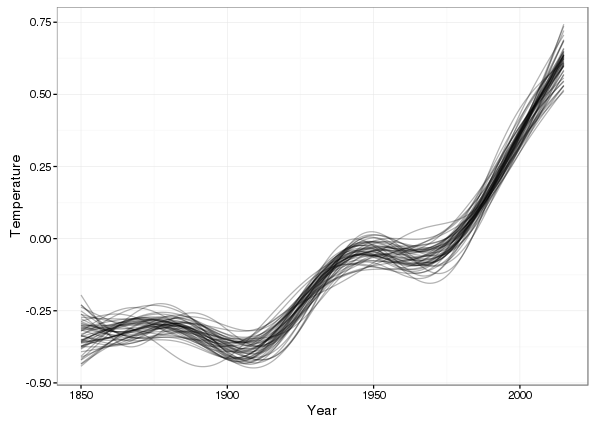
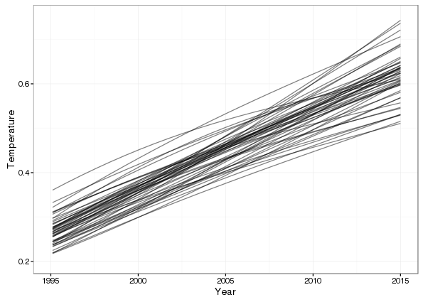
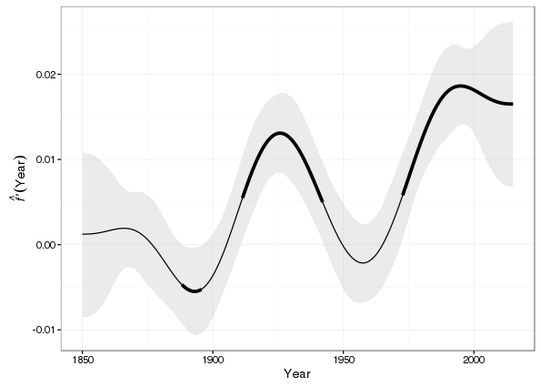
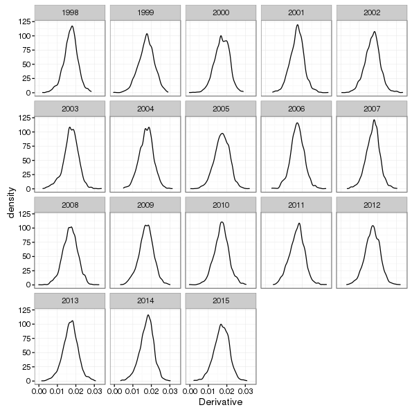
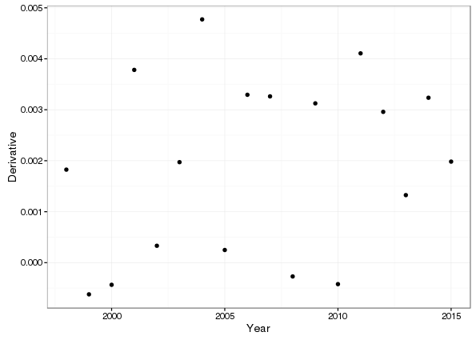
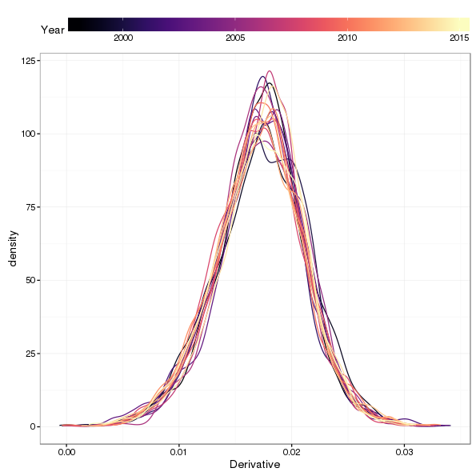

Additive modelling global temperature time series: revisited
Posted in
Tagged
GAM Time series HadCRUT Splines Global temperatures Climate change
Blogroll
Quite some time ago, back in 2011, I wrote a post that used an additive model to fit a smooth trend to the then-current Hadley Centre/CRU global temperature time series data set. Since then the media and scientific papers have been full of reports of record warm temperatures in the past couple of years, of controversies (imagined) regarding data-changes to suit the hypothesis of human induce global warming, and the brouhaha over whether global warming had stalled; the great global warming hiatus or pause. So it seemed like a good time to revisit that analysis and update it using the latest HadCRUT data.
A further motivation was my reading Cahill et al. (2015), in which the authors use a Bayesian change point model for global temperatures. This model is essentially piece-wise linear but with smooth transitions between the piece-wise linear components. I don’t immediately see where in their Bayesian model the smooth transitions come from, but that’s what they show. My gut reaction was why piece-wise linear with smooth transitions? Why not smooth everywhere? And that’s what the additive model I show here assumes.
First, I grab the data (Morice et al., 2012) from the Hadley Centre’s website and load it into R
library("curl")
tmpf <- tempfile()
curl_download("http://www.metoffice.gov.uk/hadobs/hadcrut4/data/current/time_series/HadCRUT.4.4.0.0.annual_ns_avg.txt", tmpf)
gtemp <- read.table(tmpf, colClasses = rep("numeric", 12))[, 1:2] # only want some of the variables
names(gtemp) <- c("Year", "Temperature")The values in Temperature are anomalies relative to 1961–1990, in degrees C.
The model I fitted in the last post was
\[ y = \beta_0 + f(\mathrm{Year}) + \varepsilon, \quad \varepsilon \sim N(0, \sigma^2\mathbf{\Lambda}) \]
where we have a smooth function of Year as the trend, and allow for possibly correlated residuals via correlation matrix \( \Lambda \).
The data set contains a partial set of observations for 2016, but seeing as that year is (at the time of writing) incomplete, I delete that observation.
gtemp <- head(gtemp, -1) # -1 drops the last rowThe data are shown below
library("ggplot2")
theme_set(theme_bw())
p1 <- ggplot(gtemp, aes(x = Year, y = Temperature)) +
geom_point()
p1 + geom_line()
The model described above can be fitted using the gamm() function in the mgcv package. There are other options that allow one to use gam(), or even bam() in the same package, which are simpler, but I want to keep this post consistent with the one from a few years ago, so gamm() it is. Recall that gamm() represents the additive model as a mixed effects model via the well-known equivalence between random effects and splines, and fits the model using lme(). This allows for correlation structures in the residuals. Previously we saw that an AR(1) process in the residuals was the best fitting of the models tried, so we start with that and then try a model with AR(2) errors.
library("mgcv")Loading required package: nlme
This is mgcv 1.8-12. For overview type 'help("mgcv-package")'.
m1 <- gamm(Temperature ~ s(Year), data = gtemp, correlation = corARMA(form = ~ Year, p = 1))
m2 <- gamm(Temperature ~ s(Year), data = gtemp, correlation = corARMA(form = ~ Year, p = 2))A generalised likelihood ratio test suggests little support for the more complex AR(2) errors model
anova(m1$lme, m2$lme) Model df AIC BIC logLik Test L.Ratio p-value
m1$lme 1 5 -277.7465 -262.1866 143.8733
m2$lme 2 6 -278.2519 -259.5799 145.1259 1 vs 2 2.50538 0.1135
The AR(1) has successfully modelled most of the residual correlation
ACF <- acf(resid(m1$lme, type = "normalized"), plot = FALSE)
ACF <- setNames(data.frame(unclass(ACF)[c("acf", "lag")]), c("ACF","Lag"))
ggplot(ACF, aes(x = Lag, y = ACF)) +
geom_hline(aes(yintercept = 0)) +
geom_segment(mapping = aes(xend = Lag, yend = 0))
Before drawing the fitted trend, I want to put a simultaneous confidence interval around the estimate. mgcv makes this very easy to do via posterior simulation. To simulate from the fitted model, I have written a simulate.gamm() method for the simulate() generic that ships with R. The code below downloads the Gist containing the simulate.gam code and then uses it to simulate from the model at 200 locations over the time period of the observations. I’ve written about posterior simulation from GAMs before, so if the code below or the general idea isn’t clear, I suggest you check out the earlier post.
tmpf <- tempfile()
curl_download("https://gist.githubusercontent.com/gavinsimpson/d23ae67e653d5bfff652/raw/25fd719c3ab699e48927e286934045622d33b3bf/simulate.gamm.R", tmpf)
source(tmpf)
set.seed(10)
newd <- with(gtemp, data.frame(Year = seq(min(Year), max(Year), length.out = 200)))
sims <- simulate(m1, nsim = 10000, newdata = newd)
ci <- apply(sims, 1L, quantile, probs = c(0.025, 0.975))
newd <- transform(newd,
fitted = predict(m1$gam, newdata = newd),
lower = ci[1, ],
upper = ci[2, ])Having arranged the fitted values and upper and lower simultaneous confidence intervals tidily they can be added easily to the existing plot of the datat
p1 + geom_ribbon(data = newd, aes(ymin = lower, ymax = upper, x = Year, y = fitted),
alpha = 0.2, fill = "grey") +
geom_line(data = newd, aes(y = fitted, x = Year))
Whilst the simultaneous confidence interval shows the uncertainty in the fitted trend, it isn’t as clear about what form this uncertainty takes; for example, periods where there is little change or large uncertainty are often characterised by a wide range range of functional forms, not just flat, smooth functions. To get a sense of the uncertainty in the shapes of the simulated trends we can plot some of the draws from the posterior distribution of the model
set.seed(42)
S <- 50
sims2 <- setNames(data.frame(sims[, sample(10000, S)]), paste0("sim", seq_len(S)))
sims2 <- setNames(stack(sims2), c("Temperature", "Simulation"))
sims2 <- transform(sims2, Year = rep(newd$Year, S))
ggplot(sims2, aes(x = Year, y = Temperature, group = Simulation)) +
geom_line(alpha = 0.3)
If you look closely at the period 1850–1900, you’ll notice a wide range of trends through this period, each of which is consistent with the fitted model but illustrates the uncertainty in the estimates of the spline coefficients. An additional factor is that these splines have a global amount of smoothness; once the smoothness parameter(s) are estimated, the smoothness allowance this affords is spread evenly over the fitted function. Adaptive splines would solve this problem as they in effect allow you to spread the smoothness allowance unevenly, using it sparingly where there is no smooth variation in he data and applying it liberally where there is.
An instructive visualisation for the period of the purported pause or hiatus in global warming is to look at the shapes of the posterior simulations and the slopes of the trends for each year. I first look at the posterior simulations:
ggplot(sims2, aes(x = Year, y = Temperature, group = Simulation)) +
geom_line(alpha = 0.5) + xlim(c(1995, 2015)) + ylim(c(0.2, 0.75))Warning: Removed 8750 rows containing missing values (geom_path).

Whilst the plot only shows 50 of the 10,000 posterior draws, it’s pretty clear that, in these data at least, there is little or no support for the pause hypothesis; most of the posterior simulations are linearly increasing over the period of interest. Only one or two show a marked shallowing of the slope of the simulated trend through the period.
The first derivatives of the fitted trend can be used to determine where temperatures are increasing or decreasing. Using the standard error of the derivative or posterior simulation we can also say where the confidence interval on the derivative doesn’t include 0 — suggesting statistically significant change in temperature.
The code below uses some functions I wrote to compute the first derivatives of GAM(M) model terms via posterior simulation. I’ve written about this method before, so I suggest you check out that post if any of this isn’t clear.
tmpf <- tempfile()
curl_download("https://gist.githubusercontent.com/gavinsimpson/ca18c9c789ef5237dbc6/raw/295fc5cf7366c831ab166efaee42093a80622fa8/derivSimulCI.R", tmpf)
source(tmpf)
fd <- derivSimulCI(m1, samples = 10000, n = 200)Loading required package: MASS
CI <- apply(fd[[1]]$simulations, 1, quantile, probs = c(0.025, 0.975))
sigD <- signifD(fd[["Year"]]$deriv, fd[["Year"]]$deriv, CI[2, ], CI[1, ],
eval = 0)
newd <- transform(newd,
derivative = fd[["Year"]]$deriv[, 1], # computed first derivative
fdUpper = CI[2, ], # upper CI on first deriv
fdLower = CI[1, ], # lower CI on first deriv
increasing = sigD$incr, # where is curve increasing?
decreasing = sigD$decr) # ... or decreasing?A ggplot2 version of the derivatives is produced using the code below. The two additional geom_line() calls add thick lines over sections of the derivative plot to illustrate those points where zero is not contained within the confidence interval of the first derivative.
ggplot(newd, aes(x = Year, y = derivative)) +
geom_ribbon(aes(ymax = fdUpper, ymin = fdLower), alpha = 0.3, fill = "grey") +
geom_line() +
geom_line(aes(y = increasing), size = 1.5) +
geom_line(aes(y = decreasing), size = 1.5) +
ylab(expression(italic(hat(f) * "'") * (Year))) +
xlab("Year")Warning: Removed 74 rows containing missing values (geom_path).
Warning: Removed 190 rows containing missing values (geom_path).

Looking at this plot, despite the large (and expected) uncertainty in the derivative of the fitted trend towards the end of the observation period, the first derivatives of at least 95% of the 10,000 posterior simulations are all bounded well above zero. I’ll take a closer look at this now, plotting kernel density estimates of the posterior distribution of first derivatives evaluated at each year for the period of interest.
First I generate another 10,000 simulations from the posterior of the fitted model, this time for each year in the interval 1998–2015. Then I do a little processing to get the derivatives into a format suitable for plotting with ggplot and finally create kernel density estimate plots faceted by Year.
set.seed(123)
nsim <- 10000
pauseD <- derivSimulCI(m1, samples = nsim,
newdata = data.frame(Year = seq(1998, 2015, by = 1)))
annSlopes <- setNames(stack(setNames(data.frame(pauseD$Year$simulations),
paste0("sim", seq_len(nsim)))),
c("Derivative", "Simulations"))
annSlopes <- transform(annSlopes, Year = rep(seq(1998, 2015, by = 1), each = nsim))
ggplot(annSlopes, aes(x = Derivative, group = Year)) +
geom_line(stat = "density", trim = TRUE) + facet_wrap(~ Year)
We can also look at the smallest derivative for each year over all of the 10,000 posterior simulations
minD <- aggregate(Derivative ~ Year, data = annSlopes, FUN = min)
ggplot(minD, aes(x = Year, y = Derivative)) +
geom_point()
Only 4 of the 18 years have a single simulation with a derivative less than 0. We can also plot all the kernel density estimates on the same plot to see if there is much variation between years (there doesn’t appear to be much going on from the previous figures).
library("viridis")
ggplot(annSlopes, aes(x = Derivative, group = Year, colour = Year)) +
geom_line(stat = "density", trim = TRUE) + scale_color_viridis(option = "magma") +
theme(legend.position = "top", legend.key.width = unit(3, "cm"))
As anticipated, there’s very little between-year shift in the slopes of the trends simulated from the posterior distribution of the model.
Returning to Cahill et al. (2015) for a moment; the fitted trend from their Bayesian change point model is very similar to the fitted spline. There are some differences in the early part of the series; where their model has a single piecewise linear function through 1850–1900, the additive model suggests a small decrease in global temperatures leading up to 1900. Thereafter the models are very similar, with the exception that the smooth transitions between periods of increase are somewhat longer with the additive model than the one of Cahill et al. (2015).
Social